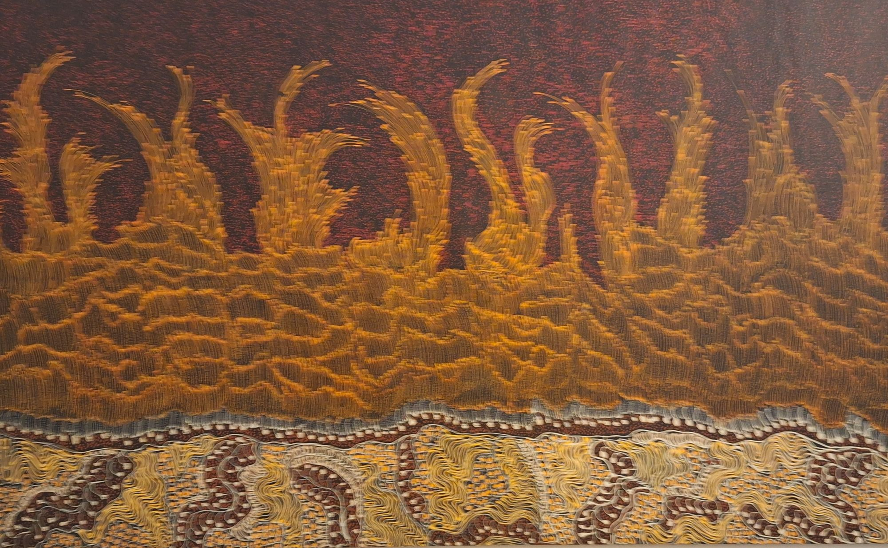

This essay is in preparation. It will read Jorna Newberry’s Fire Dreaming — the painting above, held in the PacificaRomania collection — against the wider Australian holdings and the comparative themes that run through the Journal.
Jorna Newberry’s Fire Dreaming in the PacificaRomania collection.

Jorna Newberry, Fire Dreaming, acrylic on linen, 2021, 109 × 181 cm. PacificaRomania art collection.
Jorna Newberry, Fire Dreaming, acril pe in, 2021, 109 × 181 cm. Colecția de artă PacificaRomania.
This essay is in preparation. It will read Jorna Newberry’s Fire Dreaming — the painting above, held in the PacificaRomania collection — against the wider Australian holdings and the comparative themes that run through the Journal.